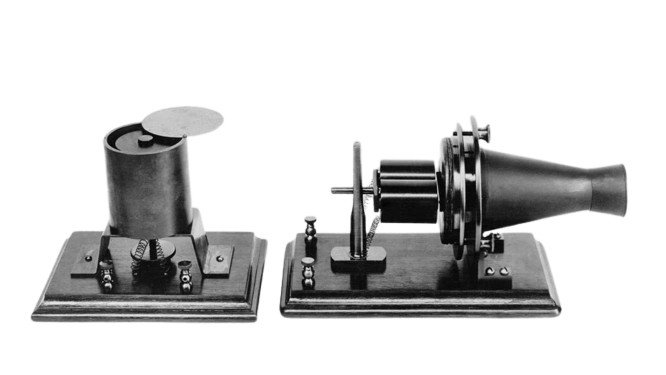

Istoria telefonului
În 1876, Alexander Graham Bell a realizat primul telefon funcțional, reușind să transmită vocea umană printr-un fir electric. Mesajul faimos transmis a fost: "Mr. Watson, come here, I want to see you."
Telefonul lui Bell transforma vibrațiile sonore în semnale electrice și invers, o inovație care a pus bazele telecomunicațiilor moderne.
Evoluția telefonului
Telefonul tip lumânare
Acest model a fost popular la începutul secolului XX, având receptorul separat de baza telefonului.
Telefonul cu disc rotativ
Telefonul cu disc rotativ a fost utilizat pe scară largă începând cu anii 1920, fiind un simbol al telecomunicațiilor clasice.
Telefonul cu butoane
În anii 1960, telefoanele cu butoane au înlocuit treptat modelele cu disc rotativ, oferind o utilizare mai rapidă și mai ușoară.
Impactul telefonului asupra societății
Telefonul a revoluționat modul în care oamenii comunică, reducând distanțele și facilitând schimbul rapid de informații. De la primele modele ale lui Bell până la telefoanele mobile moderne, această invenție a avut un impact profund asupra economiei, culturii și relațiilor interumane.